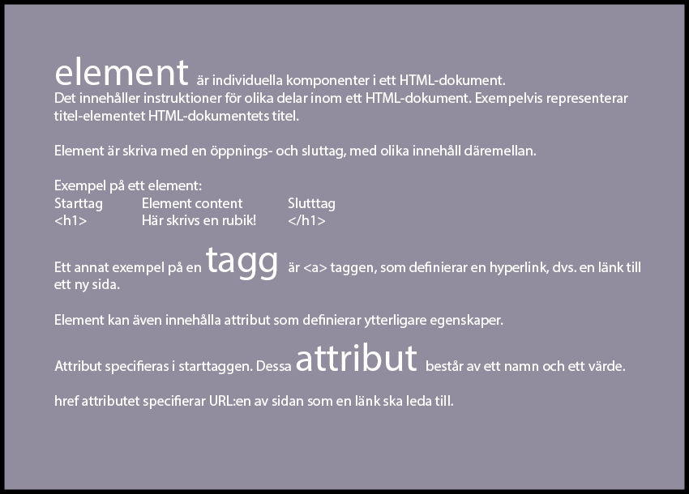

Smått & gott om
Element Syntax:

a - ankarelementet
- href - attributet specifierar en URL. Detta är den sidans URL som länken leder till.
- target - attributet berättar vart en länkad URL ska visas. Exempelvis: target_blank öppnar länken på en ny tab inom webbrowsern.
- type - attributet specifierar mediatypen av det länkade dokumentet
img - bildelementet
- height - attributet specifierar bildens höjd
- src - attributet specifierar sökvägen till bilden som ska visas på sidan
- alt - attrubitet innehåller en textbeskrivning av bilden som ska visas. Om bilden inte kan visas, syns den beskrivande texten istället
ol - elementet för ordnadade listor
- reversed - attributet specifierar att ordningen på listan ska vara omvänd (att det exempelvis skrivs ut 9, 8, 7, 6, etc).
- start - attributet specifierar startvärdet i en ordnad lista (exempelvis att listan ska starta på värdet 7, och stiga i höjd till 8, 9, 10, etc)
- type - attributet som specifierar vilken slaks markör som ska användas i listan (exempelvis 1, 2 ,3 eller a, b, c, eller i)
För fler exempel, kolla in: